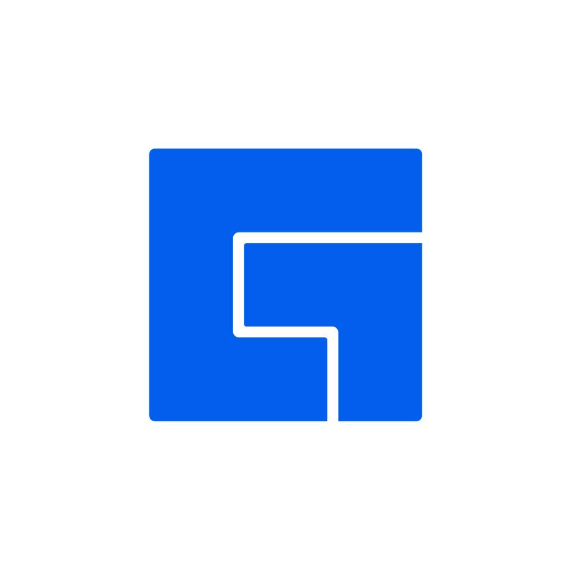
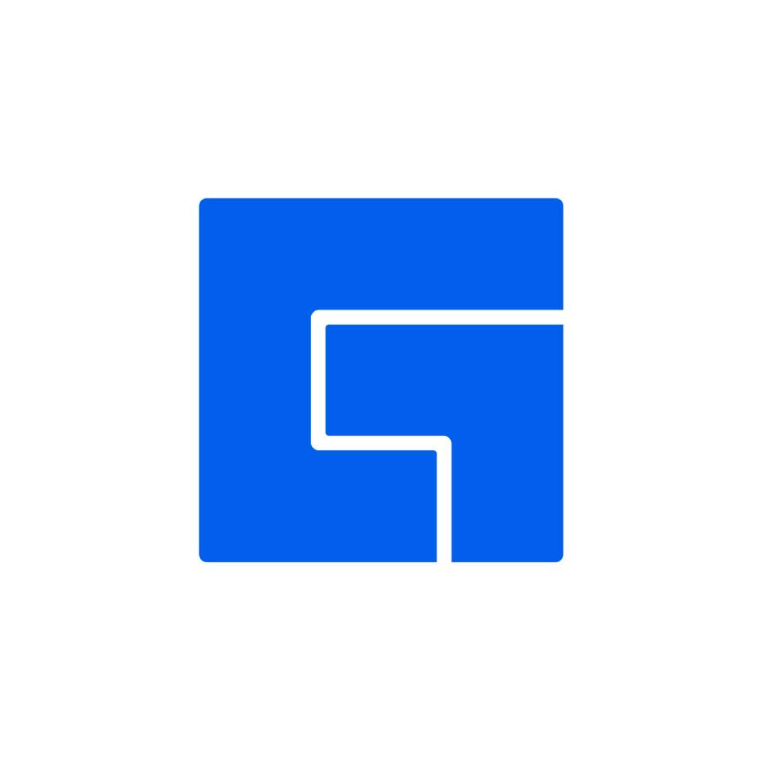
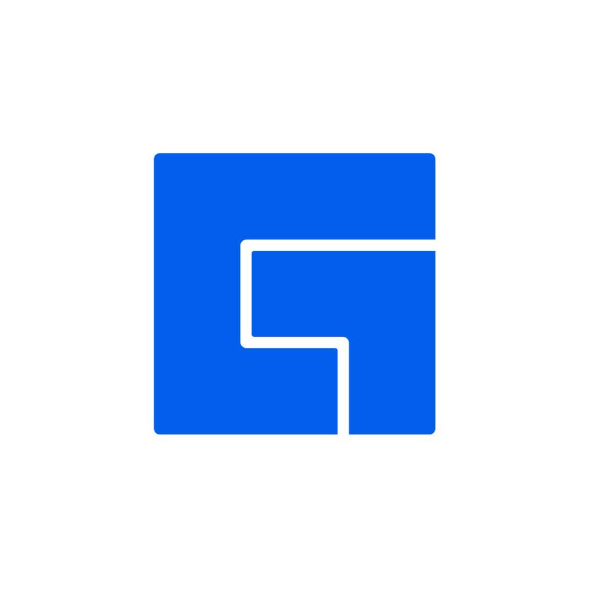

WHO WE'VE PARTNERED WITH

 

PLAYCON is a gaming community and creative collective formed from the
love of playing video games with friends. What started as a
community with the goal of creating content about video games has
evolved and grown into facebook gaming platform.
PLAYCON is created by Chuck Fernandez
in the Philippines, and regularly updates games, manages pages, and creates content that anyone who loves gaming can enjoy.
PLAYCON is about being a community that enjoys having fun together and creating a positive social
impact through gaming. We continuously aim to be a good influence in the overall gaming community,
with a battlecry that urges our community to PLAY AND LEARN!
From its humble beginnings in 2019 as an internet web show, POTATO CHUCK has always been about delivering fresh and entertaining gaming content to Filipino gamers; for the community, by the community. Throughout the explosive growth of the gaming industry, POTATO CHUCK persevered and emerged as a community of like minded gamer wanting to connect, create, and share content with the larger Filipino gamer demographic. PLAYCON is not the house where the organization is headquartered, nor is it the people who manage, plan, and create content. PLAYCON is the love for gaming that is inside every gamer. It is thousands of gamers that connect, share, and play with each other on a daily basis through the FACEBOOK GAMING community. PLAYCON isn’t just us. WE are PLAYCON.
